程式開發科學計算器已經開始支持數據，語音和視頻通信的功能（還處於測試階段）。需要註意的是，程式開發科學計算器引入的這些功能和微信、QQ不同。微信和QQ本質上是通過客戶機-服務器的方式實現數據，語音和視頻通信，而程式開發科學計算器則是真正支持端到端（Peer-to-Peer）的，去中心化的通信。當然，程式開發科學計算器引入的這些功能並非是為了和微信、QQ等通信軟體競爭，這些功能的引入是為了實現真正意義上的分布式計算。換句話說，引入這些功能將成為程式開發科學計算器和MFP語言發展的一個裏程碑。
由於還處於非常初級的測試階段，端到端通信的功能現在僅能收發短消息和進行語音和視頻的對話。實現端到端通信的方法是用戶和遠方的聯系人先通過交換email的方式建立端到端的通信連接。待連接建立之後，就不再需要email作為媒介，雙方可以直接傳遞數據和行語音和視頻的對話。Email在建立端到端通信連接時起著至關重要的信號通道的作用，本文將詳細說明如何選擇email服務和設置email參數。
為了進行遠距離端到端通信，我們假設用戶有兩部安卓手機均安裝有程式開發科學計算器1.7.4.69版，用戶還需要有兩個email信箱，email信箱有以下要求：
1.該email信箱的郵件服務器支持smtp和imap協議（一般的郵件服務器都會支持）；
2.該email信箱的郵件服務器支持用普通的客戶端收發郵件（註意是普通的客戶端比如foxmail之類的，不是該郵件服務商自己發布的專用客戶端）；
3.該email信箱的郵件郵件服務器允許用戶高頻率地檢查郵件。之所以要高頻率地查收郵件，是為了保證建立連接的實時性。否則一方現在發一個連接請求，另一方十分鐘之後再收，顯然發連接請求的那邊肯定已經等得不耐煩了，說不定都關機了。
現在軟體設置是15秒查一次郵件。但是這並不意味著視頻通信需要發大量或者很大體積的郵件。事實是實現一次視頻通信雙方只需要交換總共6封郵件，而且每份郵件只有大概50-300個字符，視頻通信完成後就可以把它們刪掉了。
以上三點，主流免費email信箱都應該能夠支持。為了方便用戶測試，開發者測試了三種不同的email服務，分別是微軟的hotmail/outlook，谷歌的gmail和騰訊的qq郵箱。
用戶如果想要申請免費的微軟郵箱，請登陸https://outlook.live.com/owa/，參見下圖：
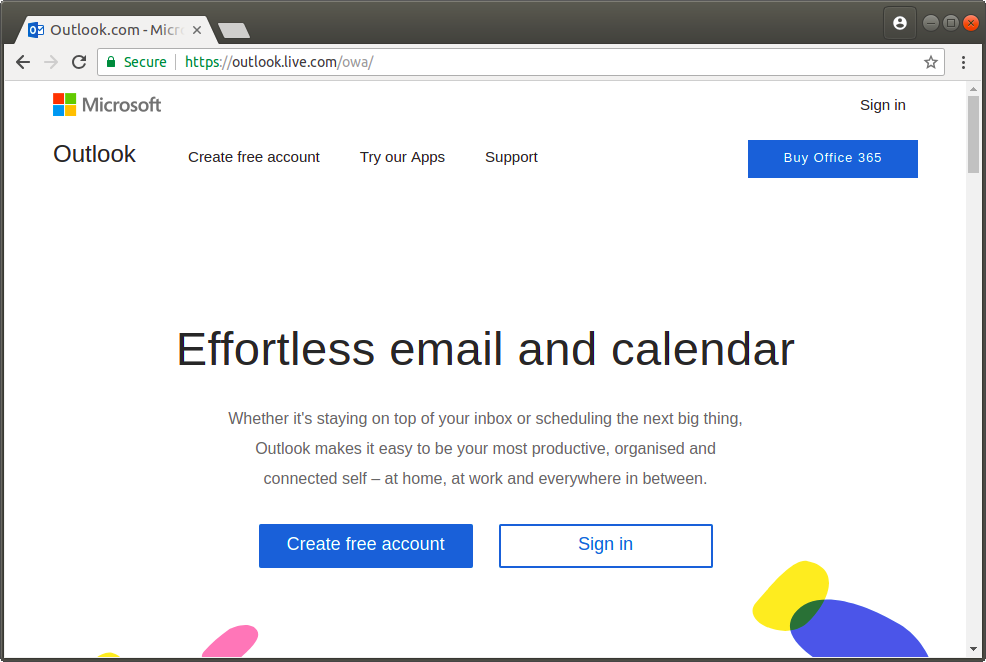
。點擊獲取免費賬戶按鈕（英文界面就是Create free account），創建用戶的email，參見下圖：
。輸入新的email信箱地址，比如，用戶輸入mfpvideocalltest1，服務器名就選擇outlook.com，新的email地址就是mfpvideocalltest1@outlook.com，然後點擊下一步（英文版就是Next按鈕）：
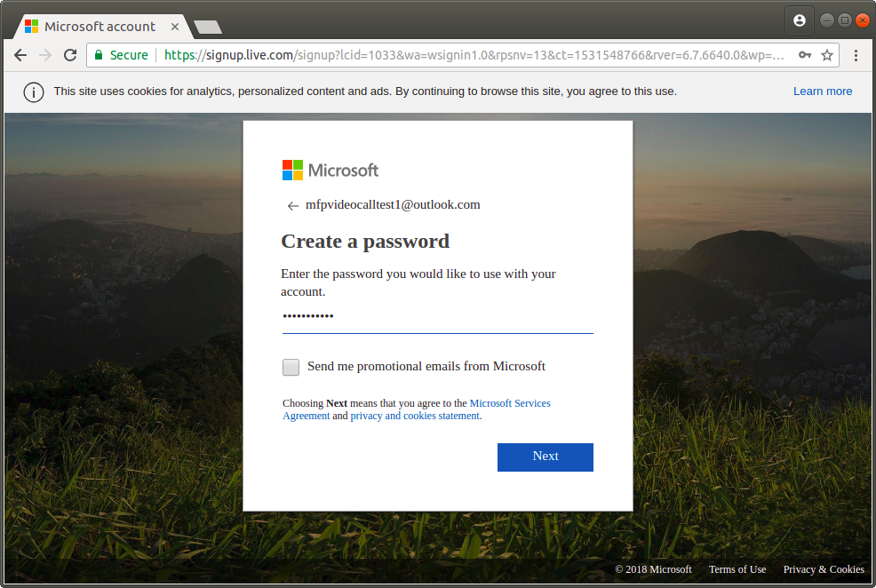
。然後用戶需要輸入密碼（Create a password），選擇一個適當的密碼，註意用戶不要選中“發給我微軟的促銷郵件”（英文版就是Send me promotional emails from Microsoft）選項。然後用戶點擊下一步（英文版就是Next按鈕）：
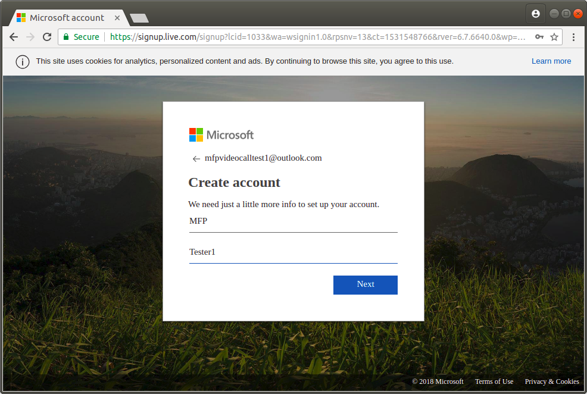
。這時，用戶被提示需要輸入姓和名（英文版是First Name和Last Name），用戶輸入之後點擊下一步（英文版就是Next按鈕），就會看到微軟要求用戶輸入國家和地區，以及出生年月日：

。用戶輸入之後點擊下一步（英文版就是Next按鈕），微軟就會要求用戶進行驗證（防止有人用腳本自動註冊大量郵箱），用戶輸入看到的字符，然後點擊下一步：
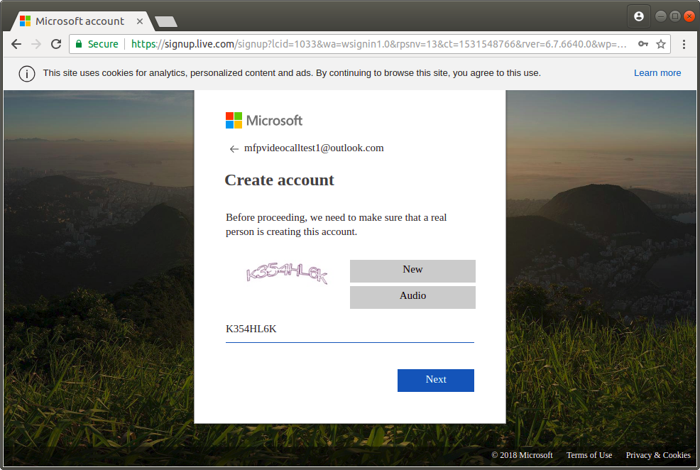
。然後用戶就會看到微軟的歡迎頁面和小提示，跳過它們：

，就可以看到收件箱裏面的郵件了：
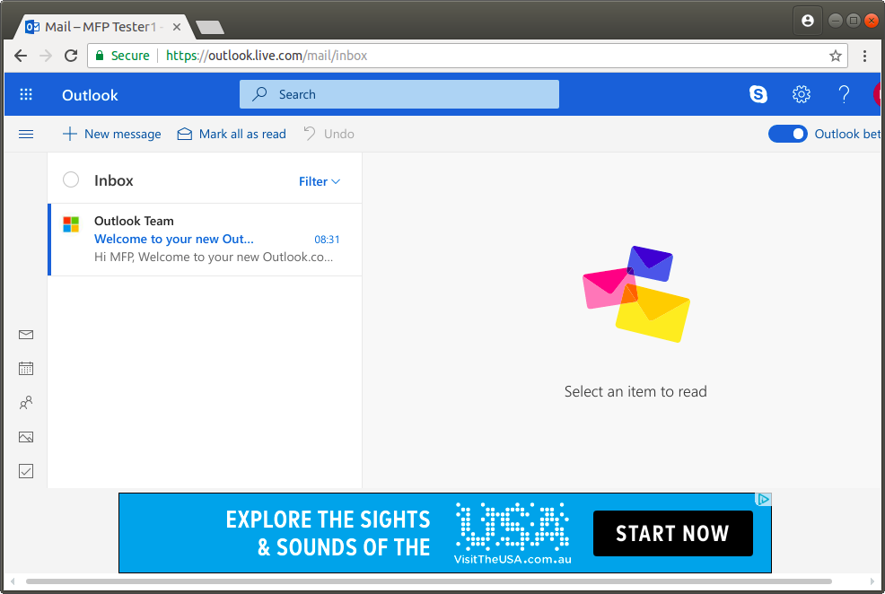。
需要註意的是，為了防止有人偷盜別人的信箱或者用信箱大量發垃圾郵件，微軟采取了一些措施。最常見的問題是，程式開發科學計算器發出的郵件被outlook信箱放到垃圾郵件（也就是Spam）文件夾中去了。這樣用戶無法接收到對方發出的郵件，端到端通信就會失敗。這時候用戶就需要手動幹預，把該郵件放回收件箱中（也就是In Box）中。幸運的是，outlook是一個非常智能的系統，用戶如果指明某一封郵件不是垃圾郵件，以後從同樣的地址發出的類似標題的郵件都不會被當作垃圾郵件。換句話說，至少這個對方email地址以後就是安全的了，不必擔心被當作垃圾郵件的問題。如果用戶還不放心，可以修改郵箱設置，明確指出從某一個email地址發出的郵件不是垃圾郵件。
再比如，如果微軟偵測到用戶的outlook信箱在一個不同的地方或者通過一個不同的設備登陸，看起來不像是用戶本人所為，微軟會阻止該次登陸，並且向該信箱發一封郵件要求確認是用戶本人在該地址使用該設備登陸，信件的標題內容大致如下（以下圖片是英文版，中文版與之類似）：

。由於一個很可能的場景是用戶在某地用個人電腦申請了一個微軟outlook郵箱，但是在進行遠程端到端通信時這個郵箱綁定在另一個地方的安卓手機上，這樣一來，當該手機第一次通過該郵箱收發email時，就會被微軟阻止。在這種情況下，用戶需要手動登陸到web郵箱中，找到這封微軟發出的警告信件，點擊“瀏覽用戶最近的活動”（英文版Review recent activity）按鈕，可能還需要再次輸入密碼，微軟可能還會發送一個字符碼給用戶的手機或者另外一個郵箱（如果用戶把郵箱和手機號或者另外一個郵箱綁定了）要求用戶驗證身份，參見下圖：
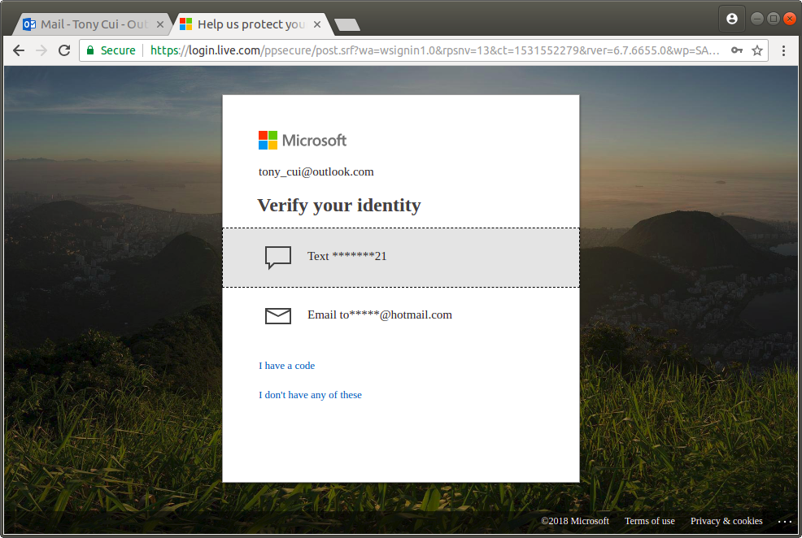
。驗證完畢後用戶就可以看到最近訪問郵箱的活動，參見下圖，如果某一次對郵箱的訪問是通過別的設備在另外的地方進行而被微軟懷疑和阻止，微軟會顯示該次訪問的詳細信息並且會有一個按鈕要求用戶確認這是不是自己。用戶點擊該按鈕確認是自己，這樣以後從該地用該設備訪問郵箱就不會出現問題了。
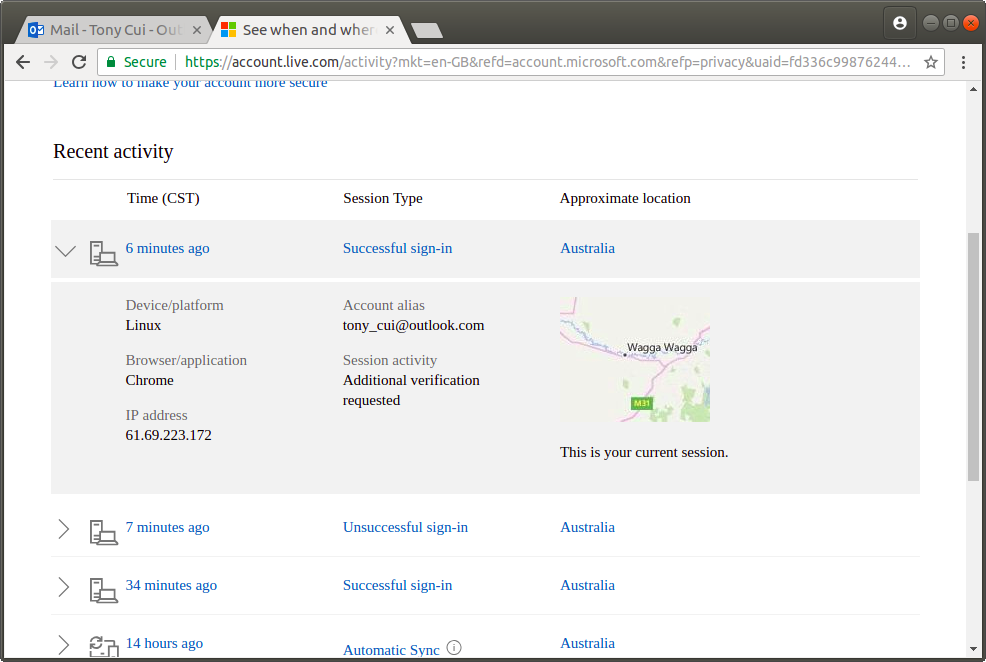
。用戶在使用微軟郵箱時還可能遇到的問題是，在剛開始使用時，微軟不會允許用戶在短時間內發出超過一定數量的郵件。而且這個限制很嚴，好像是超過5封就被禁止在當天繼續發信了，必須等到第二天發。對於程式開發科學計算器遠程端到端通信來講這是不可接受的。幸運的是，和上面一樣，出現這種情況後微軟會向該信箱發一封郵件要求用戶確認不是在發垃圾郵件，參見下圖：
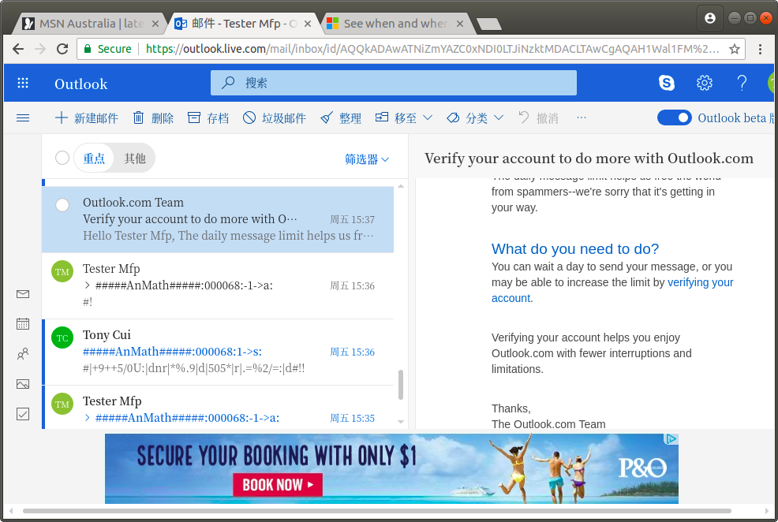
。用戶需要點擊“驗證你的賬號”（英文是verifying your account），然後告訴微軟用戶的手機號，微軟會發給你一個字符碼，用戶將字符碼輸入確認，然後該手機號就和微軟的email綁定了，用戶發送郵件就不會再受限制了。參見下圖：
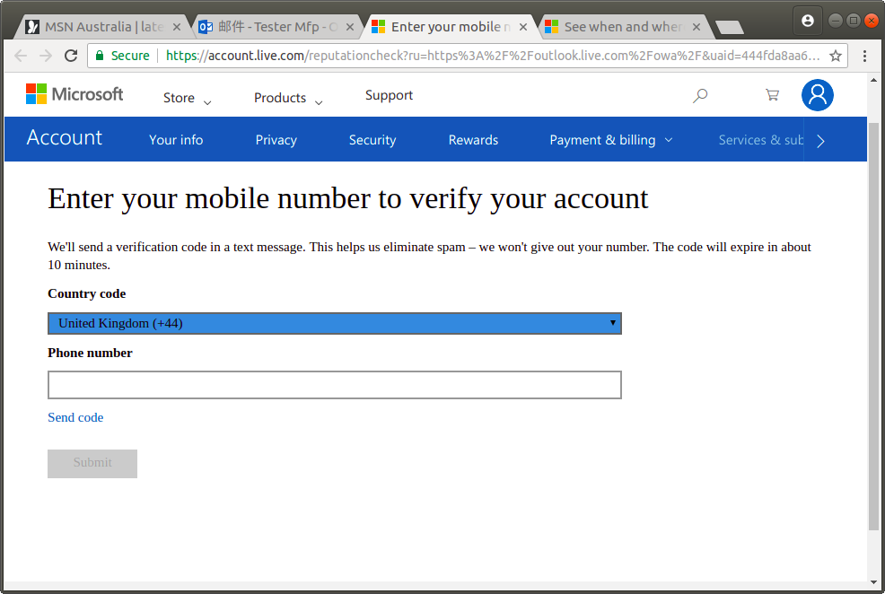。
騰訊的qq郵箱在中國大陸被廣泛使用。但在中國境外非華人圈使用的人不多。騰訊qq郵箱服務也很穩定，唯一的問題是設置起來比較麻煩。
註冊qq郵箱，不見得非要需要註冊一個相應的qq號。註冊qq郵箱的網址在：https://ssl.zc.qq.com/v3/index-chs.html?type=2 。註意現在qq郵箱都是需要發送短信驗證碼進行實名驗證的。同時用戶需要提供一個不同的激活郵箱，用於收取激活qq郵箱的email。
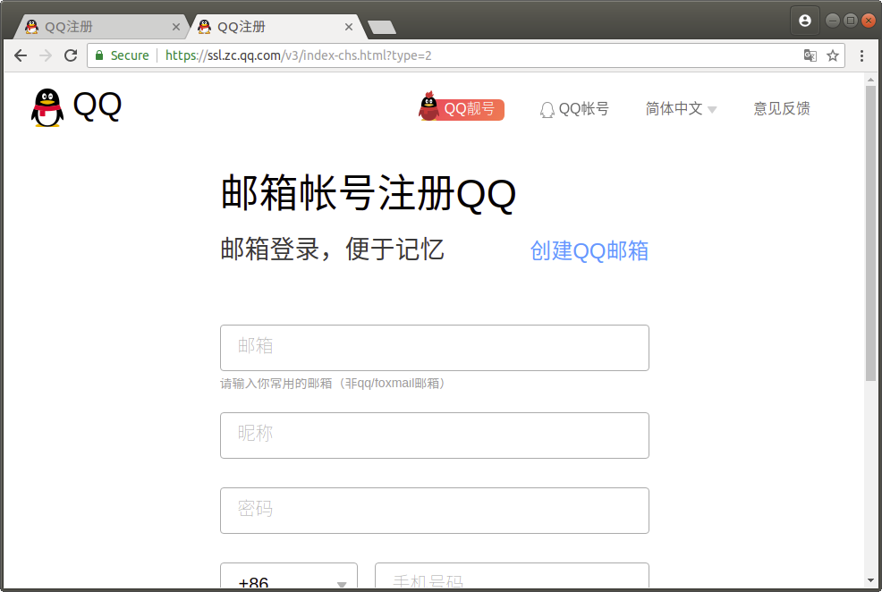
。註冊完成後，用戶會收到提示如下：
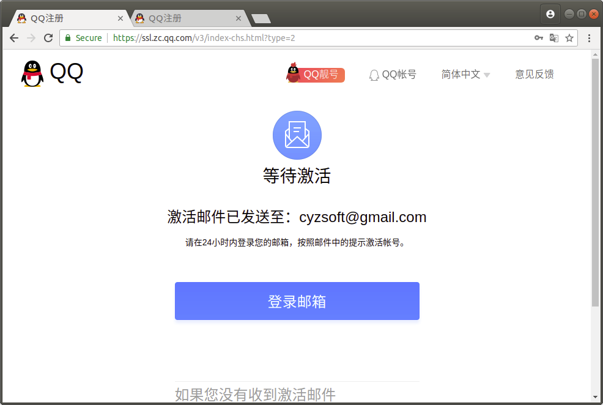
。用戶進入自己的郵箱點擊激活鏈接，進入如下界面，用戶點擊立即登陸，便進入新申請到的qq郵箱：
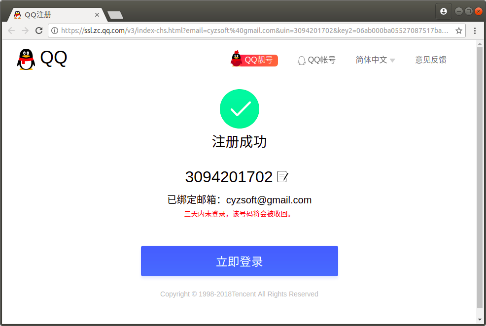
。用戶進入qq郵箱之後，還需要申請開通郵箱：
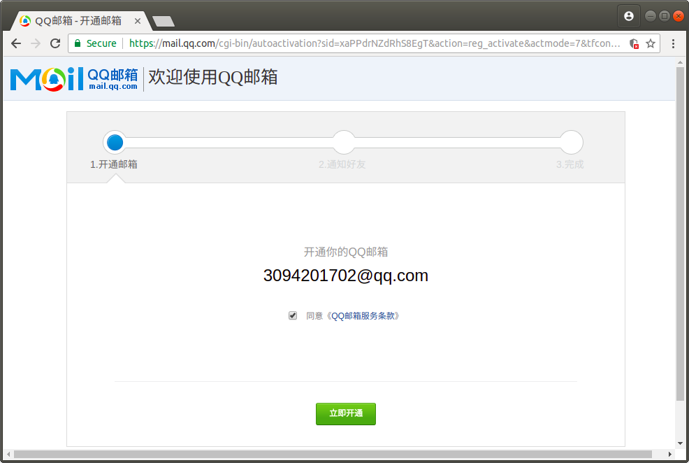
。然後進入qq郵箱，用戶就可以使用基於web的qq郵箱了。但是，這不意味著程式開發科學計算器遠程端到端通信能夠使用這個qq郵箱，用戶需要點擊qq郵箱上部的設置鏈接，對客戶端進行設置：
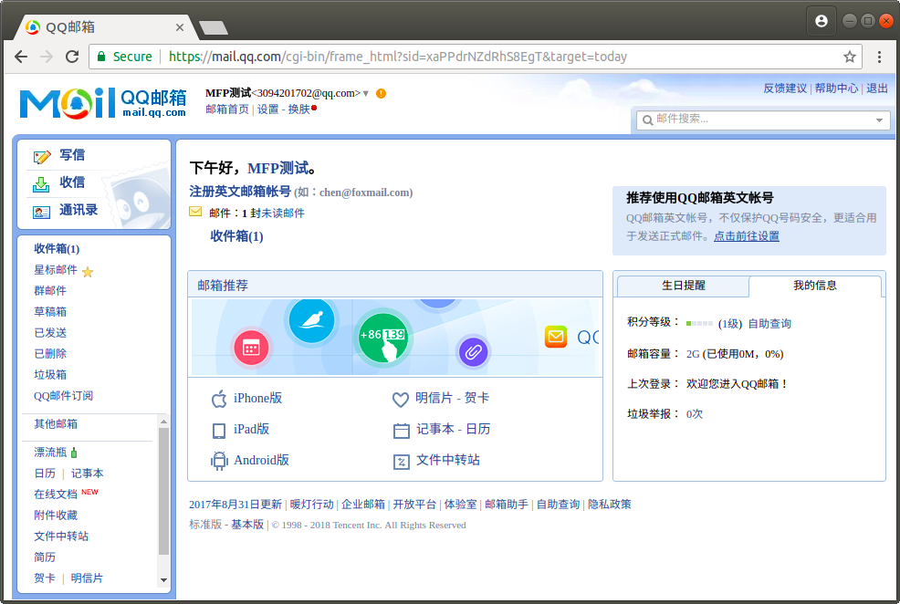
。在郵箱設置界面中，用戶需要點擊“帳戶”標簽，滑動到POP3/IMAP/SMTP/Exchange/CardDAV/CalDAV服務，這裏是用戶設置客戶端收發郵件的地方：
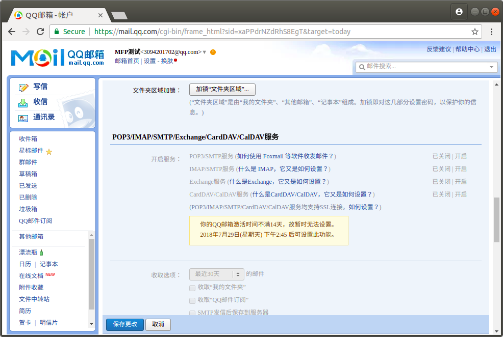
。但由於qq郵箱剛剛激活，用戶必須等待14天之後，才能夠設置客戶端服務。如果用戶已有qq郵箱，則可以設置客戶端服務：
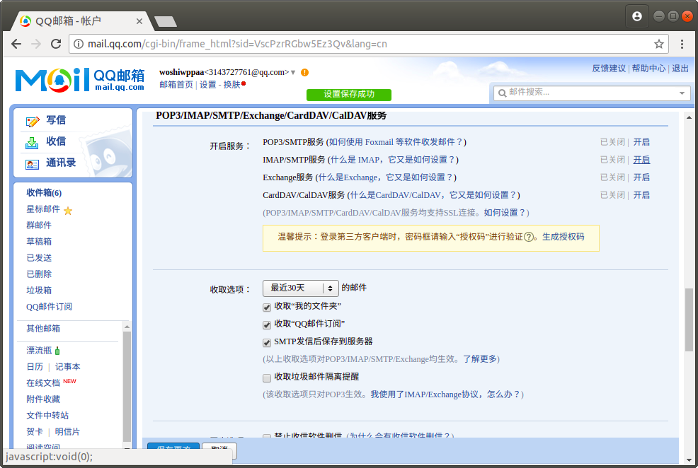
。用戶需要設置的是IMAP/SMTP服務，這裏，IMAP服務是用於收郵件，而SMTP服務是用於發郵件，用戶需要點擊左邊的“開啟”鏈接將其打開。同時，為了跟蹤端到端通信所發的每一封郵件，用戶需要選擇“SMTP發信後保存到服務器”。
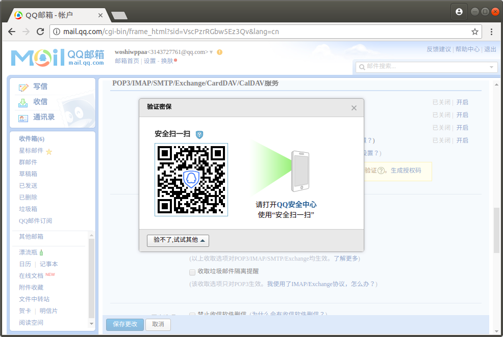
。註意開啟的過程比較麻煩，用戶需要在手機上安裝QQ安全中心，使用“安全掃一掃”，對二維碼進行掃描，參見上圖。掃描完成後，會自動驗證並生成授權碼。這個授權碼就是程式開發科學計算器在進行端到端通信連接時收發郵件的登陸密碼，參見下圖：
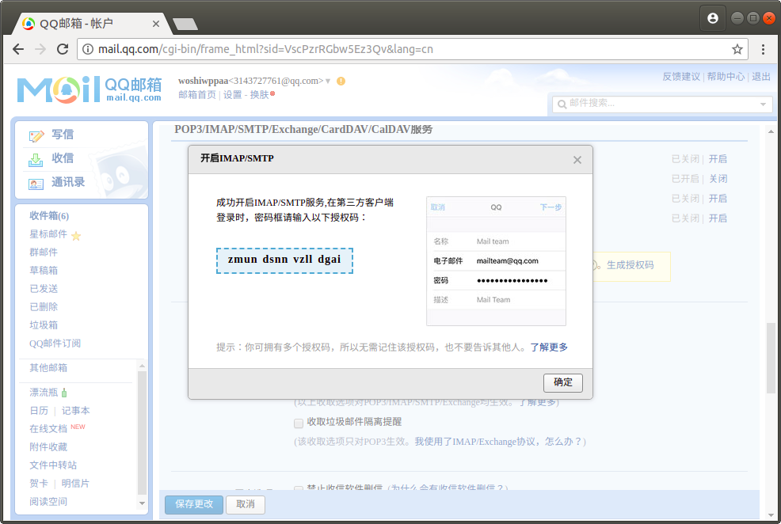
。最後用戶需要點擊保存修改即可。
需要註意的是，騰訊不允許用戶頻繁地開啟關閉客戶端服務或者生成授權碼。如果用戶一天只能最多生成2次授權碼，超過這個次數，就只能24小時之後再試。
騰訊的qq郵箱也會出現郵件被錯誤地移動到垃圾箱中的問題。在剛剛開始進行視頻連接的時候用戶必須隨時註意垃圾箱中是否有郵件。如果有用於程式開發科學計算器遠程通信的郵件，用戶需要點入這個郵件，選擇不是垃圾郵件，最後再將其移動到收件箱中，這樣這個對方email地址以後就是安全的了，不必擔心被當作垃圾郵件的問題。
此外，雖然開發者還沒有遇到過，但不排除qq郵箱會像微軟的outlook郵箱一樣，當懷疑不是用戶本人登錄時，會阻止該次登陸，並給用戶發一封警告郵件。在這種情況下，用戶需要隨時註意qq郵箱是否有異常郵件。
幸運的是，和outlook郵箱一樣，上述問題通常只會出現在剛剛開始使用該信箱進行遠程端到端通信的時候，在成功進行端到端通信之後，上述問題一般不會再出現。
Google的gmail郵箱在除了中國大陸以外的全球範圍內被廣泛使用。Google的gmail郵箱服務非常穩定可靠，但是設置起來比微軟outlook郵箱要麻煩，並且在中國大陸的使用受到了限制。
眾所周知，在除了中國大陸以外的全球範圍內Android手機是和gmail郵箱綁定的。由於程式開發科學計算器是在安卓手機上運行，相信絕大多數用戶已經擁有一個gmail郵箱。
如果用戶想要申請新的gmail信箱，可以到https://gmail.com進行申請，然後按照Google的提示一步一步設置用戶名和密碼即可。為了更方便地進行操作，建議用戶在電腦上而不是在手機上進行設置。
需要註意的是，gmail和outlook郵箱不同，不經過設置無法通過客戶端的方式收發郵件。用戶需要點擊屏幕右上方的齒輪圖標，選擇“設置”（Settings），然後再選擇“轉發和POP/IMAP”（Forwarding and POP/IMAP），參見下圖：
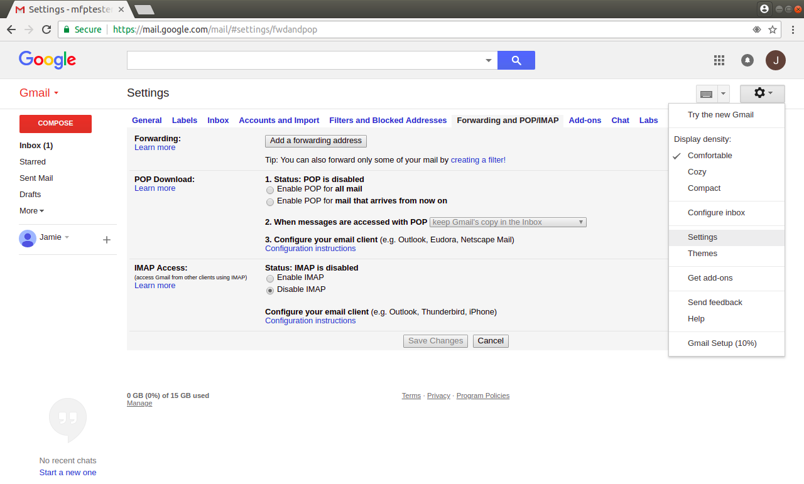
。在“POP下載”（POP Download）選項中，選擇“對從現在起收到的郵件啟用POP”（Enable POP for mail that arrives from now no）,在“當通過POP訪問郵件時”（When messages are accessed with POP），選擇“在收件箱中保留Gmail的副本”（Keep gmail copy in the inbox），在“IMAP訪問”（IMAP access）中，選擇“啟用IMAP”（Enable IMAP），選擇啟用IMAP後，IMAP訪問的其他設置使用Google的默認值即可。最後點擊“保存更改”（Save Changes）按鈕即可。
使用程式開發科學計算器通過gmail郵箱收發郵件，有兩種不同的情況。第一種情況，是使用的gmail郵箱，不是和安裝程式開發科學計算器應用的安卓手機綁定的那個gmail賬號。在這種情況下，必須采用和web登錄方式不一樣的密碼。設置該密碼需要點擊窗口右上角的9個小方塊所構成的圖標，選擇“帳戶”（Account），參見下圖：
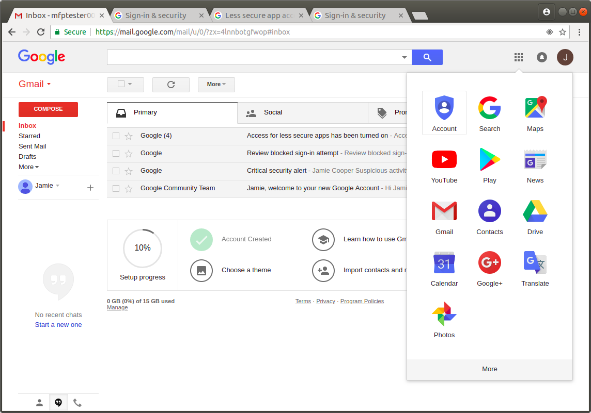
。然後用戶會進入一個新的頁面，用於控制和維護帳戶的安全。用戶需要點擊“登錄和安全”（Sign-in & security）設置區塊下的“登錄Google帳戶”（Signing in to Google）鏈接，參見下圖：
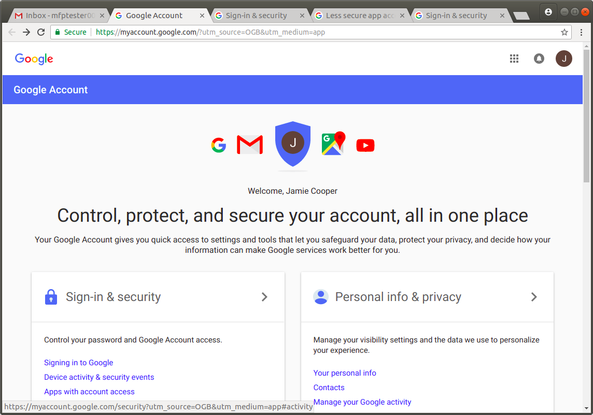
。然後用戶會進入一個新的“登錄和安全”（Sign-in & security）頁面。用戶下滑至“密碼和登錄選項”（Password & sign-in method），然後點擊“兩步驗證”（2-Step Verification），參見下圖：

。註意這時用戶可能會被要求重新輸入密碼，並且Google還會向用戶綁定的手機發送驗證碼。如果密碼和驗證碼的輸入都是正確的，用戶會進入一個新的界面如下。然後用戶點擊“啟動”（GET STARTED）按鈕，兩步驗證則會被啟動，參見下圖。用戶同時會收到一封email告知兩步驗證已經被啟動了。

。然後用戶回到gmail信箱界面，重新點擊窗口右上角的9個小方塊所構成的圖標，選擇“帳戶”（Account），進入控制和維護帳戶的安全的頁面。和前面操作一樣，用戶需要點擊“登錄和安全”（Sign-in & security）設置區塊下的“登錄Google帳戶”（Signing in to Google）鏈接，進入一個新的“登錄和安全”（Sign-in & security）頁面。用戶下滑至“密碼和登錄選項”（Password & sign-in method），註意到這時，“兩步驗證”（2-Step Verification）設置項下多出來了一個“應用密碼”（App passwords）設置項，參見下圖：

。用戶點擊進入，註意Google會要求用戶再次輸入gmail密碼並向用戶手機發送驗證碼。如果用戶密碼和驗證碼輸入正確，將會進入一個應用密碼生成界面，參見下圖：
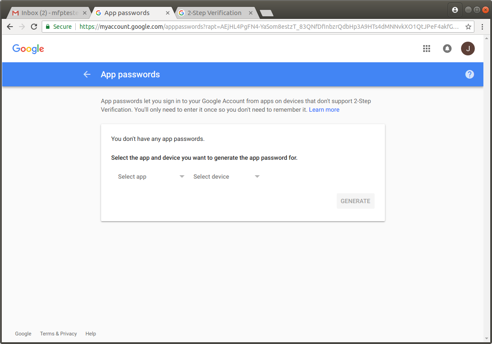
。用戶點擊“選擇應用”（Select app），選擇“其它（自定義名字）”（Other (Custom name)），輸入名字Scientific Calculator Plus（其實這個名字是無關緊要的，但用戶需要保證永遠只有一種應用使用這個密碼，該應用的名字不見得必須是Scientific Calculator Plus），這個時候，“生成”（GENERATE）按鈕就會變成藍色，意味著用戶可以為應用生成訪問gmail的密碼了。點擊這個按鈕，就會得到一個新的應用訪問gmail密碼（這個密碼和通過web訪問gmail的密碼是不一樣的），參見下圖：
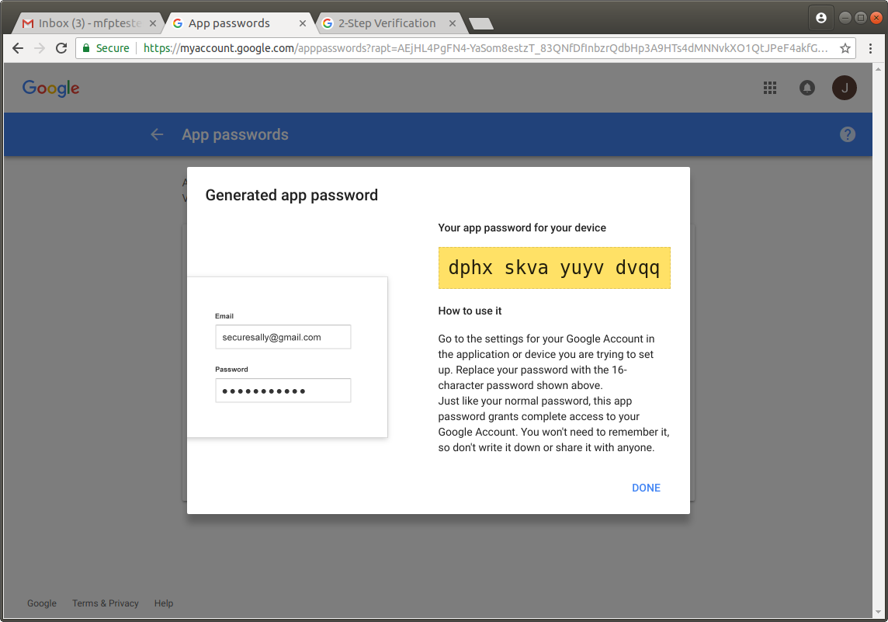
。註意密碼由16個字符組成，密碼的中間是沒有空格的。用戶將密碼記下來，然後點擊“完成”（DONE）按鈕即可。該密碼可以永久使用，除非用戶自己把它刪除。
使用程式開發科學計算器通過gmail郵箱收發郵件的第二種情況，是使用的gmail郵箱，就是和安裝程式開發科學計算器應用的安卓手機綁定的那個gmail賬號。在這種情況下，用戶可以直接使用通過Web或者安卓手機登錄gmail的密碼。但是，Google認為這不是一種安全的方式。所以，當程式開發科學計算器第一次用Web方式的gmail密碼收發郵件時，會被Google阻止。用戶會收到一封信，要求用戶檢視被阻止的登錄企圖（Review blocked sign-in attempt）。用戶需要用手機或者Web方式登錄到該gmail信箱，點開該郵件，然後點擊“允許比較不安全的應用訪問”（allowing access to less secure apps），參見下圖：

。然後用戶打開“允許較不安全的應用”開關，訪問就不再會出現這樣的問題。參見下圖：
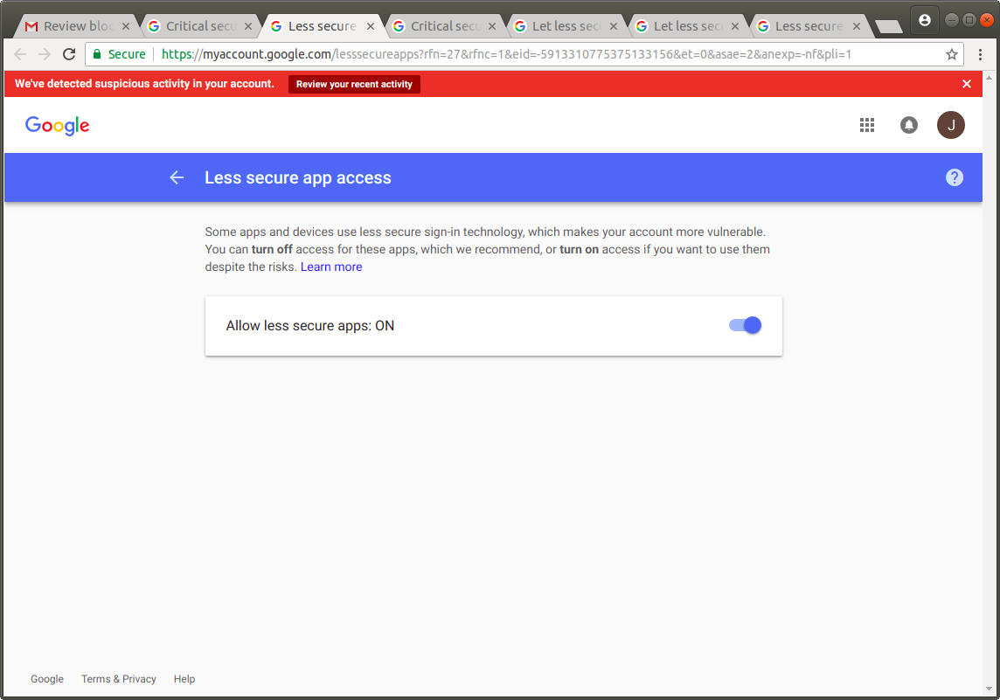
通常，如果用戶的手機或電腦是第一次訪問該gmail郵箱，Google會懷疑不是用戶本人登錄，會給該gmail信箱發一封警告信，標題可能是“重要安全警報”（Critical security alert）或者其他相關信息，內容大致是Google懷疑非本人登錄信箱進行非法操作，需要用戶檢查信箱最進的活動，參見下圖：

。用戶需要點擊“檢查最近活動”（CHECK ACTIVITY）按鈕，然後告訴Google這是本人即可（點擊“是的”（YES）按鈕），參見下圖：
 。
。
還有一個問題是，和outlook以及其他的信箱類似，gmail有可能把程式開發科學計算器發送的郵件轉移到垃圾箱（Spam）中。在這種情況下，用戶必須手動登錄到該gmail信箱，把該郵件轉移回輸入箱（Inbox）中，並且告訴Google以後類似的郵件都不能放在垃圾箱中。
為了設置端到端的通信，用戶需要打開程式開發科學計算器，選擇“設置”，然後再選擇“遠程連接設置”，然後點擊確定按鈕，便進入了設置界面。
設置的第一項是電子郵箱，註意這裏不能包含電子郵箱擁有者的名字或者其他非電子郵箱地址的字符。換句話說，電子郵箱只能遵循xxxx@xxxx.xxx.xxx的格式，諸如xxxx xxx
第二項是用戶端收發郵件的密碼。
第三項是電子郵件的smtp地址。註意如果是gmail，微軟outlook或者hotmail，或者騰訊的qq郵件，軟體會自動為用戶填好該地址。否則，用戶必須自己鍵入正確的地址。
第四項是電子郵件的smtp服務的端口。同樣，軟體會自動為用戶填好gmail，outlook/hotmail和qq郵件的端口。其他的郵箱必須由用戶自己填寫。
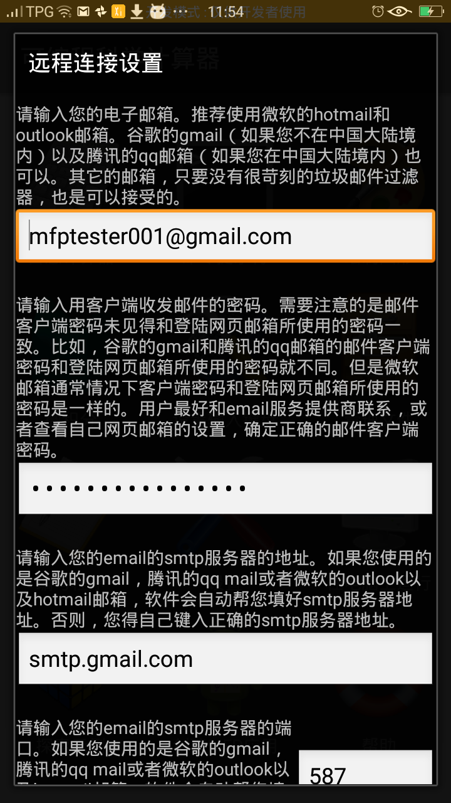。
第五項是電子郵件的imap地址。註意如果是gmail，微軟outlook或者hotmail，或者騰訊的qq郵件，軟體會自動為用戶填好該地址。否則，用戶必須自己鍵入正確的地址。
第六項是電子郵件的imap服務的端口。同樣，軟體會自動為用戶填好gmail，outlook/hotmail和qq郵件的端口。其他的郵箱必須由用戶自己填寫。
第七項是是否啟動後臺信號服務。用戶只有在啟用時才能接收連接請求。但是，後臺啟用服務意味著電池快速消耗。有一些手機，比如OPPO，小米，華為和一些三星手機，為了省電，在缺省設置下會禁止非特許應用運行於後臺。在這種情況下，如果手機沒有連接充電器，用戶需要手動設置允許本應用在後臺運行。比如對於OPPO手機，用戶需要轉到設置，選擇電池，從應用列表中選中本應用，然後禁止“後臺凍結”和“檢測到異常時自動優化”。如果手機連接了充電器並且正在充電，至少是對於OPPO手機，用戶不需要作任何特殊的設置，應用仍然可以運行於後臺。
第八項是當收到連接請求時允許後臺服務自動啟動應用。如果這一項被選中，哪怕手機已經被鎖定，如果連接請求到來，攝像頭和麥克風都會自動打開。
第七項和第八項設置對於遠程監控系統非常有用。如果用戶想用安卓手機和程式開發科學計算器架設一個遠程監控系統，這兩項必須選中。
第九項是允許後臺服務在一段時間後自動啟動目標地址輸入對話框。對於一些設備，比如OPPO，這一點很重要，否則後臺服務在一段時間後會被系統自動關閉。
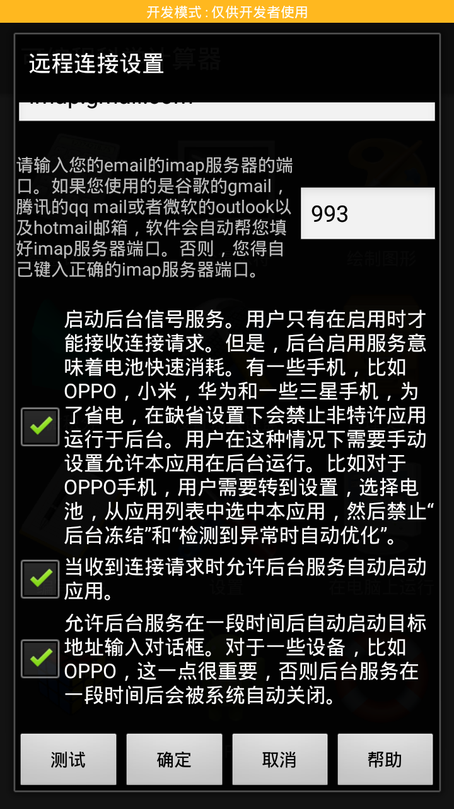。
用戶進行設置之後，可以點擊“確定”按鈕。設置被保存，設置窗口關閉。如果用戶選中了第七項，啟動後臺服務，後臺服務將會被啟動，否則，如果第七項未被選中，即便後臺服務已經被啟動，也將會被關閉。
如果用戶點擊測試按鈕，則會出現要求用戶輸入文本的對話框。這就是用戶需要輸入的要連接的對象的email地址。註意這裏不能包含email擁有者的名字或者其他非email地址的字符。換句話說，email只能遵循xxxx@xxxx.xxx.xxx的格式，諸如xxxx xxx<xxxx@xxx.xx.xxx>或者出現<，>以及逗號和分號都是非法的。如果用戶什麽都不填，則將會連接自己。用戶填好後點擊確定，視頻通話界面即被打開。用戶需要大概等待3-5分鐘，期間屏幕上會出現一些快速閃過的提示，告訴用戶連接狀態。如果連接成功，視頻窗口會出現一個小的窗口，顯示對方頭像。用戶也可以給對方發送短消息（輸入短消息，然後按“發送”按鈕），參見下圖：
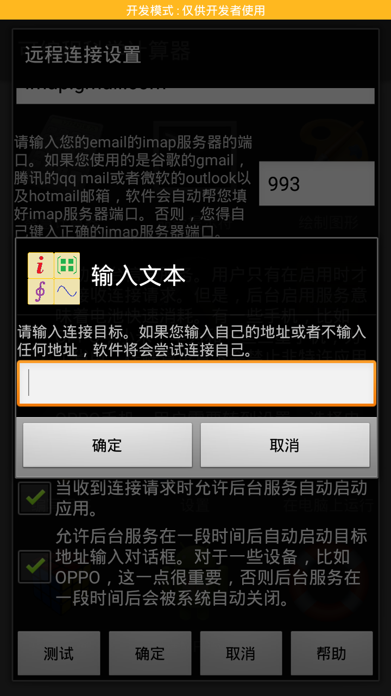。
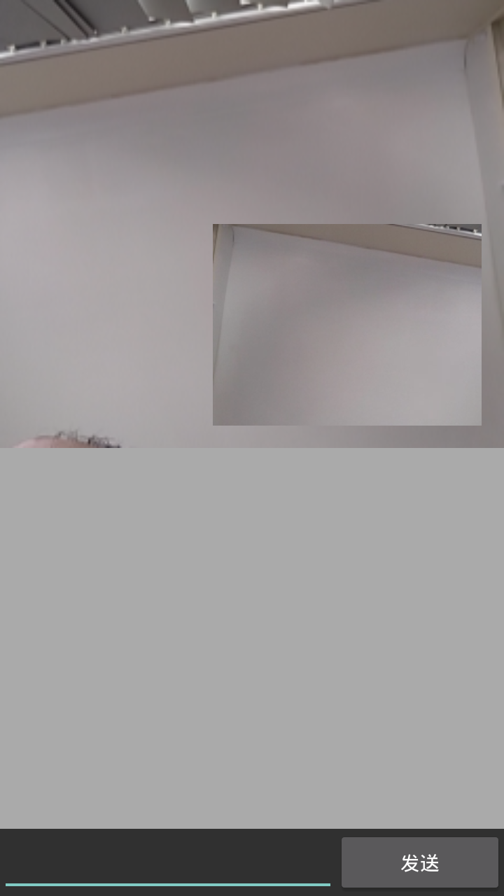。
。如果等待了7-8分鐘仍然沒有對方的頭像出現，並且用戶非常確定對方已經啟動了後臺服務，對方的email地址是正確的，並且自己的email地址，密碼，smtp和imap服務地址端口都沒有錯，那麽，用戶就需要登錄到自己的email郵箱檢查發件箱是否有給對方發送的email，email標題是#####AnMath#####:000068:1→s，然後再檢查收件箱是否有對方的回復，email標題應該是類似於#####AnMath#####:000068:0→s:0→s:0→s:0→s:0→s:0→s:0→s:，垃圾郵件箱中是否有上述郵件。如果看不到這些郵件，說明email服務還是有問題。如果實在解決不了，可以和開發者聯系：cyzsoft@gmail.com。